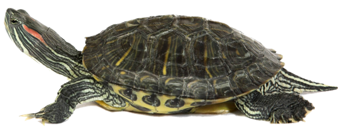
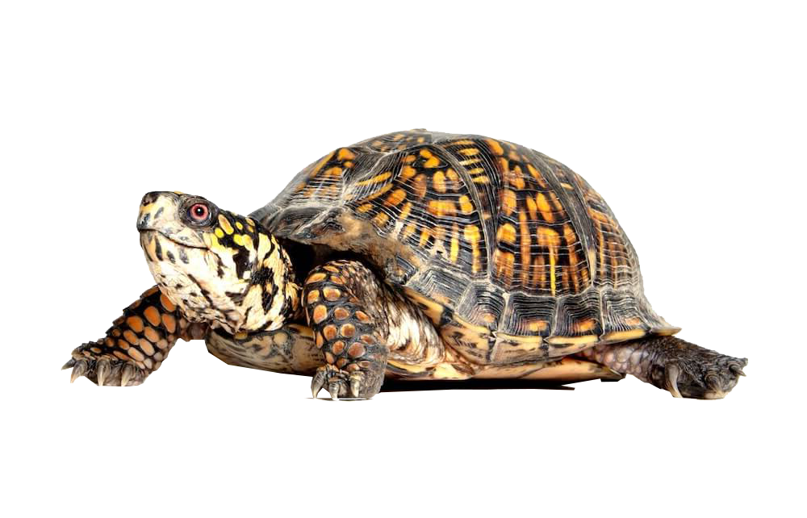

Red-Eared Slider
(Level: Beginner)
Red-eared sliders are the most well-known aquatic turtles that are kept as pets. These turtles can grow larger than most
people expect and need at least a 100 gallon tank by the time they are adults. These tanks require substrate such as
rocks and gravel that are big enough for the turtles not to accidentally eat. Sliders also require plenty of water for
them to swim in and an area of land to allow them to bask under a UVB light. This lighting should be on for 10-12
hours a day at a temperature of 95°F while the water should have a temperature no less than 70°F which can be checked
with a thermometer. Their tank should be thoroughly cleaned once per week and add clean water as they tend to drink
the same water they swim in.
Red-eared sliders are omnivores which means they have a meat and plant based diet. Food includes:
| Meat | crickets, mealworms, earthworms, minnows and goldfish |
|---|---|
| Vegetables | leafy greens, water lettuce, squash, and carrots |
| Other | Commercial turtle pellets |
Avoid overfeeding them to prevent any excessive waste that can negatively affect the water quality in the tank.
Diseases such as metabolic
bone disease and vitamin A deficiency can occur if the turtles have improper environmental
conditions and lack a diverse diet.
Handling sliders is safe as long as they aren't frequent as they might bite when
scared. Be sure to wash your hands after handling them as well.
A properly cared for red-eared slider can live for more
than 20 years.
Eastern Box Turtle
(Level: Intermediate)
Eastern box turtles are small, ornate turtles that tend to be difficult to care for and are recommended for
experienced owners only. These turtles need a tank of at least 75 gallons with one half of the tank filled with
water while the other half contains dry land. A 60-watt bulb should be provided on the dry side of the tank to
provide heat which can be measured with a thermometer. 40 gallons worth of space should be added for each
additional turtle with only one male in a setup to prevent fighting. The setup should also contain many leaves
and plants to provide shade and deep amounts of soil to allow for burrowing.
Eastern box turtles are omnivores which means they have a meat and plant based diet. Food includes:
| Meat | crickets, mealworms, earthworms, and small crayfish |
|---|---|
| Fruits & Vegetables | bananas, romaine lettuce, strawberries, cantaloupe, and apple slices |
| Other | Commercial turtle pellets |
Hatchlings of this species are difficult to raise for multiple reasons such as poor reactions to handling and
are often found unhealthy at pet shops.
When purchasing these turtles, it is recommended to make sure to observe
its behavior and appearance. If the turtles shows signs, such as puffy
eyes, refusal for food, or fresh injuries
than it would be best not to purchase it. Purchasing an unhealthy turtle is risky as they tend to die shortly
after being purchased. An active and healthy eastern box turtle can live up to 40 years.